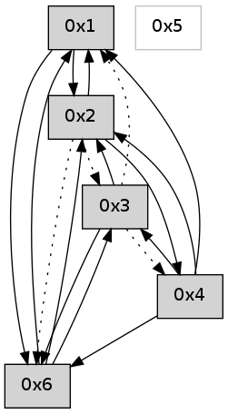

>> << IDX [start] -100 -25 -5 +0 +5 +25 +100 [640.38235116]
 Previous packets
635.009122 beacon04(adaf) #0 coord=01,02,05,03,04,06 cycle=432.0ms assoc 64 2c 4a
635.019122 beacon06(adaf) #0 coord=01,02,05,03,04,06 cycle=432.0ms assoc 64 58 56
----------------------------------------------------------------------
635.461269 beacon01(adaf) #0 coord=01,02,05,03,04,06 cycle=432.0ms assoc
-- color-indic=0 64 25 fe
635.471229 beacon02(adaf) #0 coord=01,02,05,03,04,06 cycle=432.0ms assoc 64 74 01
635.481230 beacon05(adaf) #0 coord=01,02,05,03,04,06 cycle=432.0ms assoc 64 d2 2b
635.491229 beacon03(adaf) #0 coord=01,02,05,03,04,06 cycle=432.0ms assoc 64 4e 0f
635.501230 beacon04(adaf) #0 coord=01,02,05,03,04,06 cycle=432.0ms assoc 64 e8 25
635.511230 beacon06(adaf) #0 coord=01,02,05,03,04,06 cycle=432.0ms assoc 64 9c 39
635.522927 [Hello(6): seq=351 sym=3,4,1,2 sysInfo= stat=3:11,0,0,0/4:0,0,0,0/1:10,0,0,0/2:0,0,0,0]
----------------------------------------------------------------------
635.953377 beacon01(adaf) #0 coord=01,02,05,03,04,06 cycle=432.0ms assoc
-- color-indic=0 64 7b 9f
635.963340 beacon02(adaf) #0 coord=01,02,05,03,04,06 cycle=432.0ms assoc 64 2a 60
635.973338 beacon05(adaf) #0 coord=01,02,05,03,04,06 cycle=432.0ms assoc 64 8c 4a
635.983338 beacon03(adaf) #0 coord=01,02,05,03,04,06 cycle=432.0ms assoc 64 10 6e
635.993340 beacon04(adaf) #0 coord=01,02,05,03,04,06 cycle=432.0ms assoc 64 b6 44
636.003338 beacon06(adaf) #0 coord=01,02,05,03,04,06 cycle=432.0ms assoc 64 c2 58
636.015016 [Hello(4): seq=437 sym=6,1,2 sysInfo= stat=6:9,0,0,0/1:8,0,0,0/2:7,0,0,0]
636.018421 [Hello(1): seq=336 sym=2,4,6 sysInfo= stat=2:4,0,0,0/4:5,0,0,0/6:7,0,0,0]
----------------------------------------------------------------------
636.445486 beacon01(adaf) #0 coord=01,02,05,03,04,06 cycle=432.0ms assoc
-- color-indic=0 64 bf f0
636.455448 beacon02(adaf) #0 coord=01,02,05,03,04,06 cycle=432.0ms assoc 64 ee 0f
636.465446 beacon05(adaf) #0 coord=01,02,05,03,04,06 cycle=432.0ms assoc 64 48 25
636.475448 beacon03(adaf) #0 coord=01,02,05,03,04,06 cycle=432.0ms assoc 64 d4 01
636.485447 beacon04(adaf) #0 coord=01,02,05,03,04,06 cycle=432.0ms assoc 64 72 2b
636.495450 beacon06(adaf) #0 coord=01,02,05,03,04,06 cycle=432.0ms assoc 64 06 37
636.507152 [Hello(6): seq=352 sym=3,4,1,2 sysInfo= stat=3:12,0,0,0/4:0,0,0,0/1:11,0,0,0/2:0,0,0,0]
----------------------------------------------------------------------
636.937594 beacon01(adaf) #0 coord=01,02,05,03,04,06 cycle=432.0ms assoc
-- color-indic=0 64 f3 40
636.947555 beacon02(adaf) #0 coord=01,02,05,03,04,06 cycle=432.0ms assoc 64 a2 bf
636.957555 beacon05(adaf) #0 coord=01,02,05,03,04,06 cycle=432.0ms assoc 64 04 95
636.967555 beacon03(adaf) #0 coord=01,02,05,03,04,06 cycle=432.0ms assoc 64 98 b1
636.977556 beacon04(adaf) #0 coord=01,02,05,03,04,06 cycle=432.0ms assoc 64 3e 9b
636.987556 beacon06(adaf) #0 coord=01,02,05,03,04,06 cycle=432.0ms assoc 64 4a 87
636.999226 [Hello(4): seq=438 sym=6,1,2 sysInfo= stat=6:10,0,0,0/1:9,0,0,0/2:7,0,0,0]
637.003269 [Hello(1): seq=337 sym=2,4,6 sysInfo= stat=2:4,0,0,0/4:5,0,0,0/6:8,0,0,0]
----------------------------------------------------------------------
637.429702 beacon01(adaf) #0 coord=01,02,05,03,04,06 cycle=432.0ms assoc
-- color-indic=0 64 37 2f
637.439662 beacon02(adaf) #0 coord=01,02,05,03,04,06 cycle=432.0ms assoc 64 66 d0
637.449665 beacon05(adaf) #0 coord=01,02,05,03,04,06 cycle=432.0ms assoc 64 c0 fa
637.459663 beacon03(adaf) #0 coord=01,02,05,03,04,06 cycle=432.0ms assoc 64 5c de
637.469663 beacon04(adaf) #0 coord=01,02,05,03,04,06 cycle=432.0ms assoc 64 fa f4
637.479663 beacon06(adaf) #0 coord=01,02,05,03,04,06 cycle=432.0ms assoc 64 8e e8
637.491341 [Hello(6): seq=353 sym=3,4,1,2 sysInfo= stat=3:13,0,0,0/4:0,0,0,0/1:12,0,0,0/2:0,0,0,0]
----------------------------------------------------------------------
637.921809 beacon01(adaf) #0 coord=01,02,05,03,04,06 cycle=432.0ms assoc
-- color-indic=0 64 7a 28
637.931770 beacon02(adaf) #0 coord=01,02,05,03,04,06 cycle=432.0ms assoc 64 2b d7
637.941770 beacon05(adaf) #0 coord=01,02,05,03,04,06 cycle=432.0ms assoc 64 8d fd
637.951770 beacon03(adaf) #0 coord=01,02,05,03,04,06 cycle=432.0ms assoc 64 11 d9
637.961771 beacon04(adaf) #0 coord=01,02,05,03,04,06 cycle=432.0ms assoc 64 b7 f3
637.971771 beacon06(adaf) #0 coord=01,02,05,03,04,06 cycle=432.0ms assoc 64 c3 ef
637.983428 [Hello(4): seq=439 sym=6,1,2 sysInfo= stat=6:11,0,0,0/1:10,0,0,0/2:7,0,0,0]
637.987149 [Hello(3): seq=438 sym=2,6 asym=4,1 sysInfo= stat=2:0,0,0,0/6:14,0,0,0/4:0,0,0,0/1:14,0,0,0]
637.996270 [Hello(1): seq=338 sym=2,4,6 sysInfo= stat=2:4,0,0,0/4:5,0,0,0/6:9,0,0,0]
----------------------------------------------------------------------
638.413918 beacon01(adaf) #0 coord=01,02,05,03,04,06 cycle=432.0ms assoc
-- color-indic=0 64 be 47
638.423878 beacon02(adaf) #0 coord=01,02,05,03,04,06 cycle=432.0ms assoc 64 ef b8
638.433879 beacon05(adaf) #0 coord=01,02,05,03,04,06 cycle=432.0ms assoc 64 49 92
638.443878 beacon03(adaf) #0 coord=01,02,05,03,04,06 cycle=432.0ms assoc 64 d5 b6
638.453879 beacon04(adaf) #0 coord=01,02,05,03,04,06 cycle=432.0ms assoc 64 73 9c
638.463883 beacon06(adaf) #0 coord=01,02,05,03,04,06 cycle=432.0ms assoc 64 07 80
638.475589 [Hello(6): seq=354 sym=3,1,2 sysInfo= stat=3:14,0,0,0/1:13,0,0,0/2:1,0,0,0]
----------------------------------------------------------------------
638.906027 beacon01(adaf) #0 coord=01,02,05,03,04,06 cycle=432.0ms assoc
-- color-indic=0 64 f2 f7
638.915988 beacon02(adaf) #0 coord=01,02,05,03,04,06 cycle=432.0ms assoc 64 a3 08
638.925989 beacon05(adaf) #0 coord=01,02,05,03,04,06 cycle=432.0ms assoc 64 05 22
638.935988 beacon03(adaf) #0 coord=01,02,05,03,04,06 cycle=432.0ms assoc 64 99 06
638.945989 beacon04(adaf) #0 coord=01,02,05,03,04,06 cycle=432.0ms assoc 64 3f 2c
638.955991 beacon06(adaf) #0 coord=01,02,05,03,04,06 cycle=432.0ms assoc 64 4b 30
638.967410 [Hello(1): seq=339 sym=2,6 sysInfo= stat=2:4,0,0,0/6:10,0,0,0]
638.971338 [Hello(4): seq=440 sym=6,3,1,2 sysInfo= stat=6:12,0,0,0/3:0,0,0,0/1:11,0,0,0/2:7,0,0,0]
----------------------------------------------------------------------
639.398136 beacon01(adaf) #0 coord=01,02,05,03,04,06 cycle=432.0ms assoc
-- color-indic=0 64 36 98
639.408096 beacon02(adaf) #0 coord=01,02,05,03,04,06 cycle=432.0ms assoc 64 67 67
639.418096 beacon05(adaf) #0 coord=01,02,05,03,04,06 cycle=432.0ms assoc 64 c1 4d
639.428096 beacon03(adaf) #0 coord=01,02,05,03,04,06 cycle=432.0ms assoc 64 5d 69
639.438097 beacon04(adaf) #0 coord=01,02,05,03,04,06 cycle=432.0ms assoc 64 fb 43
639.448097 beacon06(adaf) #0 coord=01,02,05,03,04,06 cycle=432.0ms assoc 64 8f 5f
639.459757 [Hello(6): seq=355 sym=3,1,2 sysInfo= stat=3:15,0,0,0/1:14,0,0,0/2:1,0,0,0]
----------------------------------------------------------------------
639.890243 beacon01(adaf) #0 coord=01,02,05,03,04,06 cycle=432.0ms assoc
-- color-indic=0 64 4e 35
639.900206 beacon02(adaf) #0 coord=01,02,05,03,04,06 cycle=432.0ms assoc 64 1f ca
639.910204 beacon05(adaf) #0 coord=01,02,05,03,04,06 cycle=432.0ms assoc 64 b9 e0
639.920204 beacon03(adaf) #0 coord=01,02,05,03,04,06 cycle=432.0ms assoc 64 25 c4
639.930204 beacon04(adaf) #0 coord=01,02,05,03,04,06 cycle=432.0ms assoc 64 83 ee
639.940204 beacon06(adaf) #0 coord=01,02,05,03,04,06 cycle=432.0ms assoc 64 f7 f2
639.951907 [Hello(4): seq=441 sym=6,3,1,2 sysInfo= stat=6:13,0,0,0/3:0,0,0,0/1:11,0,0,0/2:7,0,0,0]
639.956889 [Hello(1): seq=340 sym=2,6 sysInfo= stat=2:5,0,0,0/6:11,0,0,0]